Analitix
Physical store intelligence, inside Odoo. Visitors across any number of doors, conversion against your own POS, and the walk-outs your team can still catch.
This is not a people counter. The counter is the foundation. “You had 400 visitors” helps nobody. “Eleven people waited at the ring counter and nine were never spoken to” is a decision somebody can act on tomorrow morning.
Your point of sale knows every ticket. It has no idea how many people walked past those tickets and left. Analitix supplies the denominator, and everything after that follows from it.
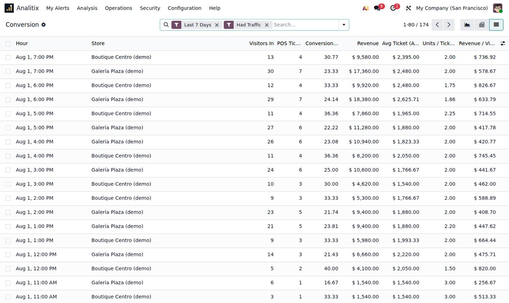
One entrance or seven. Defined in configuration, never in code, and a staff or service door is measured without distorting the conversion rate.
Employee crossings are excluded by encrypted face signature. Without that, a salesperson who steps outside ten times a day is ten customers.
Somebody who steps out for a phone call and comes back counts once — not three times, which is what an ordinary counter reports.
Four people and one ticket is not a 25% conversion rate. People who arrive together are treated as one purchase unit.
A lost sale is not somebody lingering. It is three things at once: they lingered past your threshold, nobody served them, and there was no ticket. Each alone is ordinary; together they are a sale that walked out.
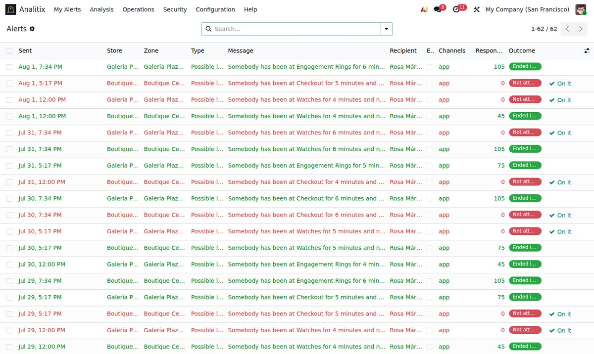
Odoo app, Odoo chat and WhatsApp reach only the assigned salesperson. An audible chime and a signage screen are also available — off by default, each labelled with exactly what it costs in discretion.
Per zone, per weekday, per hour. Whoever covers the ring counter at 11:00 is not whoever covers it at 19:00, and an uncovered zone escalates instead of evaporating.
Response time and close rate measured against the alerts a salesperson answered — nobody is marked down for a nudge that arrived while they were with another customer.
Plain language, by e-mail: visitors, conversion, walk-outs spotted and rescued, and roughly what that was worth — labelled an estimate every single time.
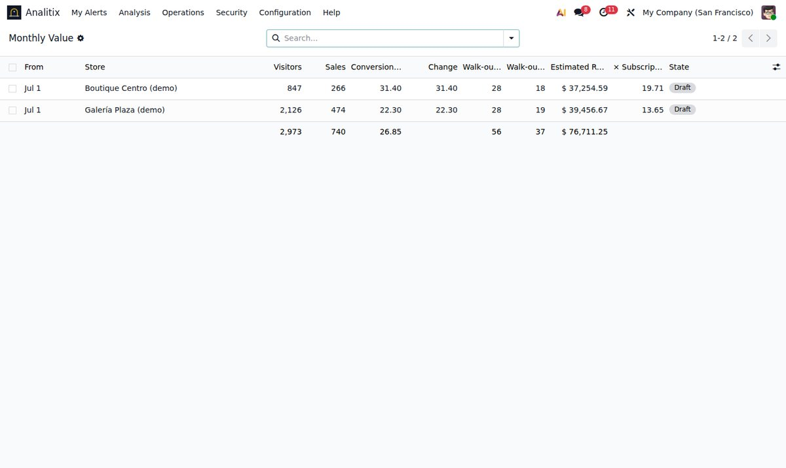
In the order the questions usually come: what gets installed, what it can be plugged into, what it does with what it sees, and what finally reaches the person standing on the floor.
The overlay in these scenes — the line, the boxes, the track numbers, the counters, the dwell timer, the zones — is exactly what Analitix draws and exactly what it decides. The shop underneath is a generated scene with synthetic people, marked Illustration on screen: we are not going to put a real stranger's face on a marketing page for a product whose whole promise is that it never keeps one. The last two are real screenshots of Odoo.
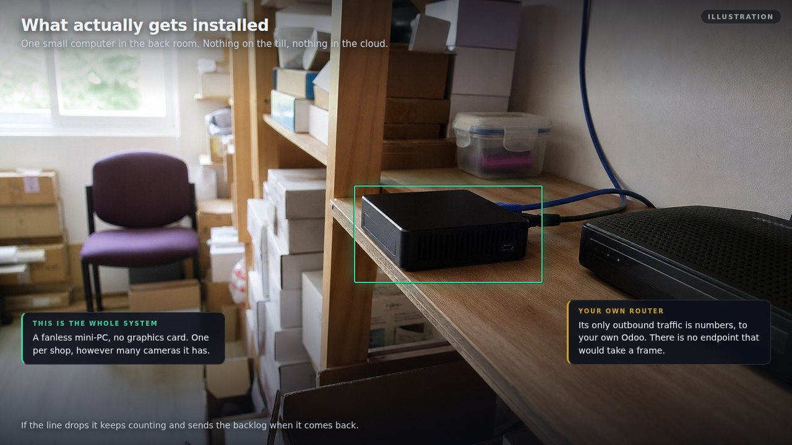
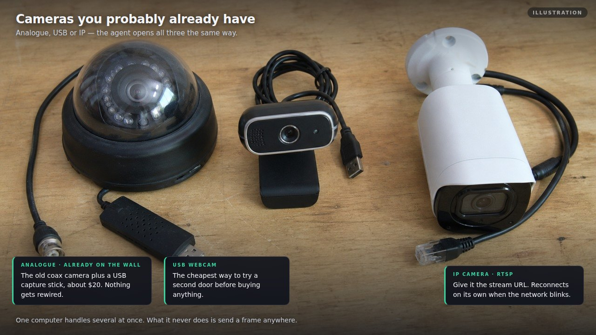
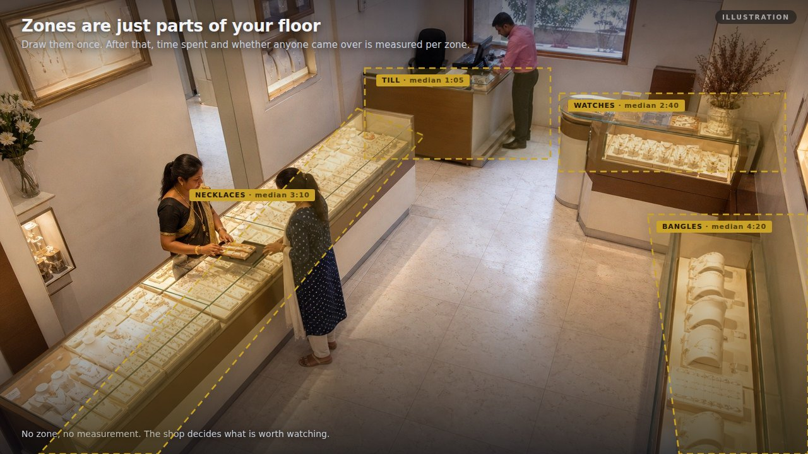
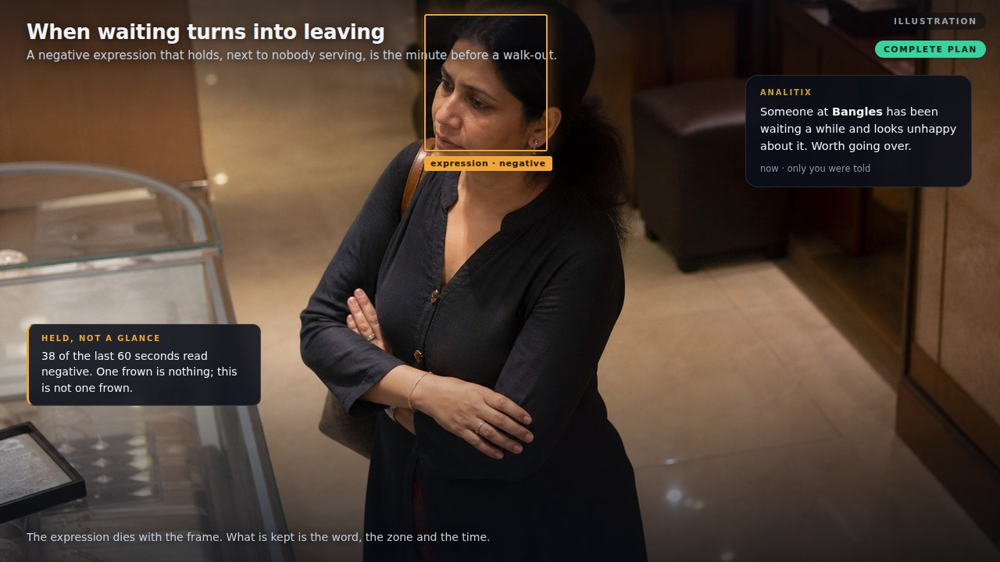
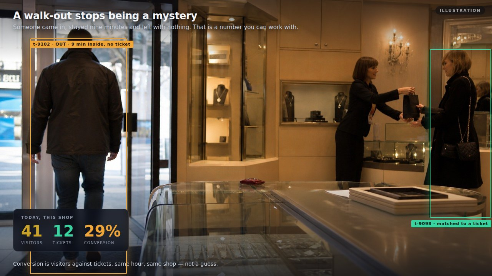
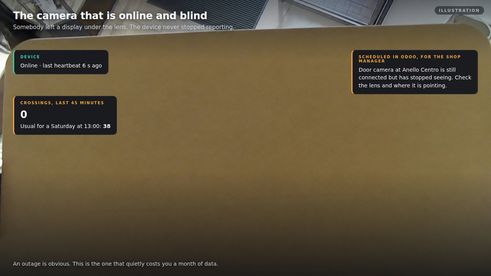
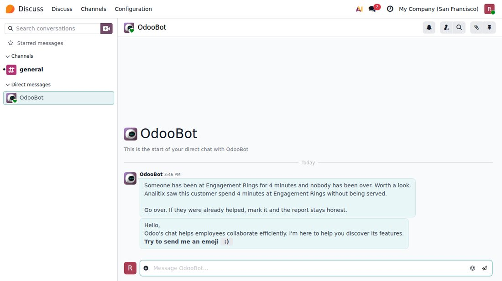
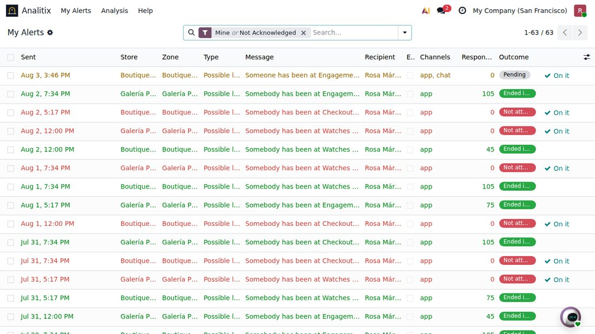
Recorded from the real interface over the demo data that ships with the module — nothing staged, and nothing you cannot reproduce on your own database with a single click and no hardware.
Everything above measures behaviour. The watch list names somebody, and a false positive lands on a real person who did nothing — so it is built with more friction than anything else here, and the friction is the point.
Ever. There is no code path that creates an entry. A person writes it, with a dated reason, and the record of why is what somebody reads a year later.
A new entry recognises nobody until a second authorised person confirms it, and the author cannot be that person. One bad afternoon should not be enough to mark somebody.
Every entry carries a review date and a hard expiry. Lapsing is the default; staying on the list is what takes a deliberate act.
No screen, no door, no automatic report, and never the sales floor at large. It goes quietly to a small named group, and a person decides. False positives are recorded, because a list whose mistakes nobody writes down is one nobody can fix.
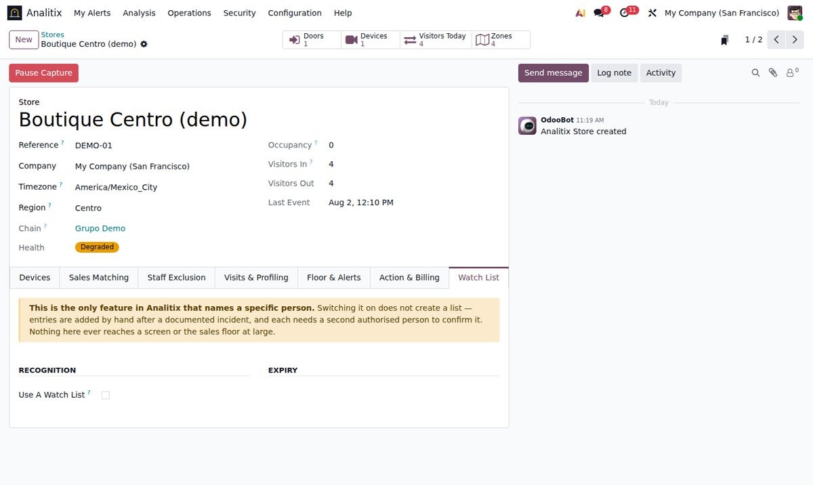
Head office already knows which branch sells most — that is what an ERP is for. What it has never had is the denominator. With it, "Morelia sold less than Guadalajara" finally splits into two different problems: fewer people came in, or the same people came in and fewer bought.
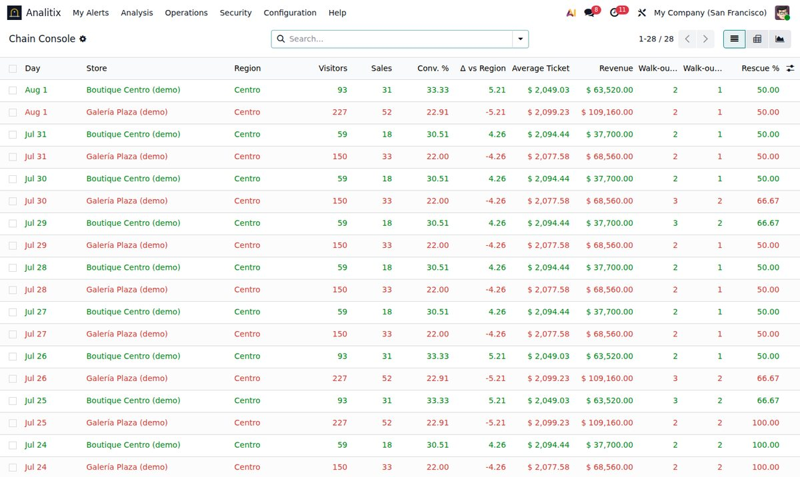
A regional manager is given a region — including the branches that open next year. A hand-written list of stores is one nobody remembers to extend, and stale access outlives the person it was written for.
Whether recognition correlates a person between branches (off by default) and whether the watch list is shared between them (on by default). Both guarded in code rather than in the interface, and both written to the audit log.
A nightly rollup per store per day is what the long-horizon reports read, so crossing events can be deleted on your own retention policy without losing a figure anybody looks at — and pruning refuses to run ahead of the summary.
One arriving face is compared against one store, or at most one chain. Never against everything in the database — which is both a performance property and a promise.
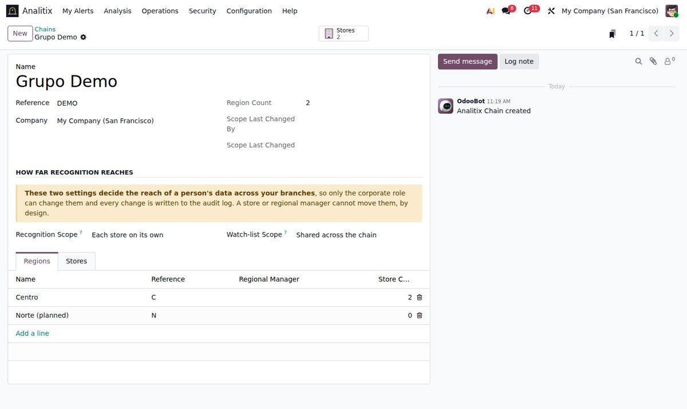
A single-store customer creates neither a chain nor a region, and nothing about their installation changes. This exists for the companies that need it and costs the shops that do not exactly nothing.
| Included | What it gives you |
|---|---|
| Counting & conversion | Any number of doors, hardened ingest API with one revocable key per device, device health with offline alerts, capture kill switch, staff exclusion, hourly conversion analytics against POS, density per m². |
| Visits & profiling | Anonymous re-identification across every door, encrypted signatures deleted on your own retention window, purchase units, optional demographics with a confidence floor, liveness. |
| Floor & alerts | Zones and displays, dwell and engagement, lost-sale detection, the discreet nudge on five channels with a per-zone rota, display performance against the sales of what is on it, ticket attribution, behaviour signals. |
| Action | Signage rule engine that resolves where before what, personalised welcome with a social privacy rule, floor coaching, visit frequency, CRM leads, staff attendance into hr.attendance, per-store plan, monthly value report. |
| Watch list | Manual entries only, double control, automatic expiry and periodic review, a match that is a prompt and never an action, false-positive tracking, read auditing, and a separate security role granted to nobody on install. |
| Chain scale (optional) | Chains and regions with no fixed limit, access scoped by region rather than by a list that goes stale, the corporate console comparing every branch against its own region, two elevated and audited decisions about how far recognition reaches, and a daily rollup that lets raw events be pruned without losing a reported figure. |
Analitix is sold to many stores, not built for one. The number of doors, the number of zones and cameras, every threshold, every alert recipient — all of it is filled in by an implementer, and the test suite fails if anyone ever hardcodes a store's shape.
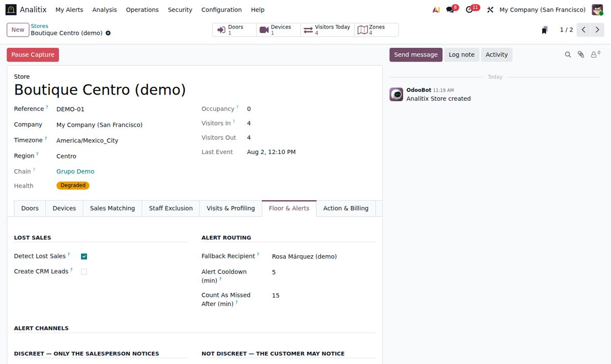
Recognition runs on a machine in the store. Odoo receives counts and irreversible numeric vectors — never a frame, never a photograph.
Face signatures are encrypted at rest and removed on the retention window the store sets, enforced by a scheduled job rather than by a promise.
A store that bought the analytics never acquires a biometric customer index by accident. Naming a customer is off by default, and every read of that data is audited.
Pause a store's capture from the UI. No deployment, no trip to the shop, no ticket to anybody.
Both halves of the software in one purchase — including the camera agent, which is not sold separately and is not a service you have to contract. What is contracted per shop is the running service: support, the monthly value report, and the plan that shop is on.
| Included | What it is |
|---|---|
| The Odoo module | Everything in the table above, on Odoo 19 Community or Enterprise. Unlimited stores, doors, zones and cameras — none of it is licensed by count. |
| The edge agent | The Python program that runs on the mini-PC in your shop, talks to
the camera and does the counting. Source included, in the module's own
edge/ folder, with its systemd unit and an example
configuration. It has a demo mode that posts synthetic
crossings, so you can prove the whole chain works before any hardware
is mounted. |
| The ingest API contract | doc/API.md: the whole protocol, written so a third
party can integrate different hardware without reading our source.
Your data is not locked behind our agent. |
| Manuals, in the app | A user manual for the shop and an implementation guide for whoever mounts the cameras, in Spanish and English, picked from the reader's own Odoo language. Plus six screencasts. |
| Demo data | Two stores of different shapes, a fortnight of traffic, tickets, walk-outs and a closed monthly report — enough to judge the product without buying a camera first. |
| How it is priced | |
|---|---|
| The module | One-time, here on apps.odoo.com. Unlimited doors, zones, cameras and users, and the edge agent included. |
| Per store you analyse | From US$49 to US$179 a month depending on the plan, contracted with XUBAX. US$120 is the usual one — the plan that spots the walk-outs. The first store's first month is included with the module. |
| Plan | What the shop gets | Per store / month |
|---|---|---|
| Counting | Visitors across every door with staff excluded, conversion against your POS — average ticket, units per ticket, revenue per visitor, density per m² — the per-door split, device health, and the monthly report. | US$49 |
| Visits | + a customer who steps out and comes back counts once; age band, gender and expression at the door; and a family treated as one buying decision instead of four visitors. | US$79 |
| Service | + lost-sale detection and the discreet nudge; the optional nudge when somebody has looked uncomfortable for a while; which visit produced which ticket; behaviour signals. This is the plan the product is really about. | US$120 |
| Complete | + the screens react to what is measured; recognising a customer by
name at the door; staff attendance into Odoo's own
hr.attendance; and the watch list. |
US$179 |
Not included, because nobody can sell it in a zip: the cameras and the mini-PC. Those are ordinary off-the-shelf hardware you buy once — the next section says exactly what, and the cheapest working setup is one overhead camera and one small PC per shop. Installation and calibration are also not included; the implementation guide is written so a competent technician can do it, and we do it for customers who would rather we did.
| Position | Required | What it enables | Compute |
|---|---|---|---|
| Door, overhead in the doorway | Yes | Counting, and with it the conversion rate. It sees the tops of heads and never a face. | x86 mini-PC or Jetson Orin Nano |
| Frontal, at face height | No | Staff exclusion, visits, purchase units, demographics. | Shares the door machine |
| Zone, covering the area | No | Dwell, lost sales, display attention. | A modest GPU from 3–4 zones up |
| Checkout, framed on the customer | No | Ticket attribution, optional identification. | Shares the zone machine |
| Cameras — it is not an IP-camera product | |
|---|---|
| USB webcam | Straight in. The cheapest way to start, and for counting the angle matters far more than the price: a webcam looking straight down at the doorway beats an expensive camera mounted at an angle. |
| Analogue cameras | Through a US$20–30 USB capture stick. The machine sees them as an ordinary webcam. |
| The analogue DVR you already own | Nearly all of them publish RTSP, so nothing else is needed. If your shops are already wired for CCTV, this is the cheap route. |
| IP cameras | Over RTSP. |
| Depth cameras (Orbbec, RealSense) | Count best, cost most. |
| Hikvision, Dahua, IR beams | Supported with no agent at all. They count but give no face, so staff exclusion, visits and purchase units need one of the camera positions above. |
Starting cheap and migrating later is a supported path, and a common one: a shop that begins with one webcam over the door gets its conversion rate on day one, and adds a second camera at face height when it wants to know who those visitors were.
No. No image or video is ever transmitted or stored. The frame is discarded in memory the moment the detection is done, and what reaches Odoo is a list of numbers from which no picture can be reconstructed.
No. Recognition runs on hardware in your own shop. This module has no computer-vision dependency at all — it only receives JSON over your own HTTPS connection.
You do not. The agent opens a video device on the machine, so a USB webcam works, an analogue camera works through a US$20–30 capture stick, and most analogue DVRs already publish an RTSP stream you can point straight at. What actually decides counting accuracy is the angle — overhead, in the doorway — not what the camera cost.
Yes, and so does one, or seven. The number of doors is configuration. The module's own test suite proves a one-door boutique and a multi-door mall unit both run through the same code.
No. Every dependency is Community. Odoo's WhatsApp module is Enterprise and is detected at runtime — without it the other alert channels work exactly as documented.
Yes. Install with demo data and you get two stores, a fortnight of
traffic, tickets, walk-outs and a monthly report — enough to read every
screen and judge the product without any hardware. The included edge agent
also has a demo mode that posts synthetic crossings, so you
can prove the whole chain end to end before mounting a camera.
Nothing is ever added automatically. A person writes each entry with a dated reason, a second authorised person has to confirm it before it recognises anybody, entries expire on their own, and a match is a discreet prompt to a small named group — never an accusation, never a screen, never an automatic action.
Yes. The edge agent ships inside the module, in its edge/
folder — source, systemd unit and example configuration. You copy it to
the mini-PC in your shop and start it. What you still have to buy is the
hardware itself: a camera and a small PC.
The module is a one-time purchase for your database — the software, the edge agent, the manuals and the API contract, with no limit on doors, zones, cameras or users. The per-store service is contracted separately with XUBAX, per shop you actually analyse, and that is where support and the monthly value report live. Your first store's first month is included.
No, and this is deliberate rather than an oversight. There is no counter of stores, cameras or users anywhere in the code, and the plan on each store is a configuration control, not a licence check — so no billing problem can ever switch a shop's cameras off. The commercial terms are per store; the software is not the thing enforcing them. And if you would rather run it entirely yourself against your own hardware, the full ingest contract ships with the module precisely so you can.
No. You create no chain and no region, every field it adds stays empty, and nothing on your screens changes. It is there for the companies with branches to compare, and the module's own test suite includes a check that a single-store installation is untouched by it.
Inside the app, in Spanish and English, chosen automatically from your Odoo language: a user manual for the shop and an implementation guide for whoever mounts the cameras. The full ingest API contract ships with the module for anyone integrating different hardware.